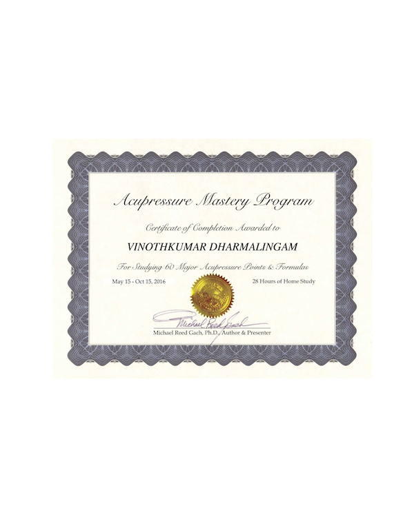
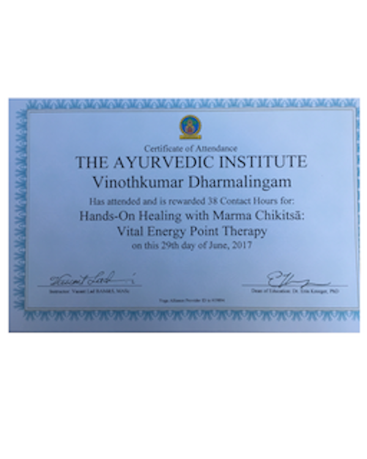
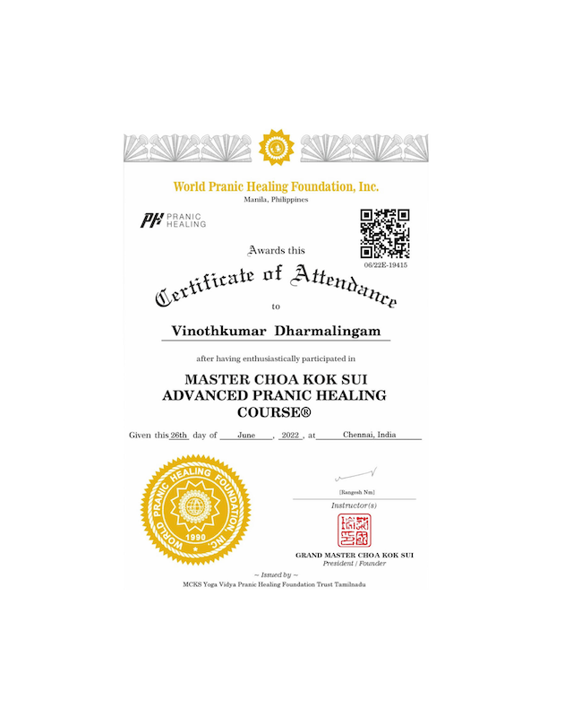
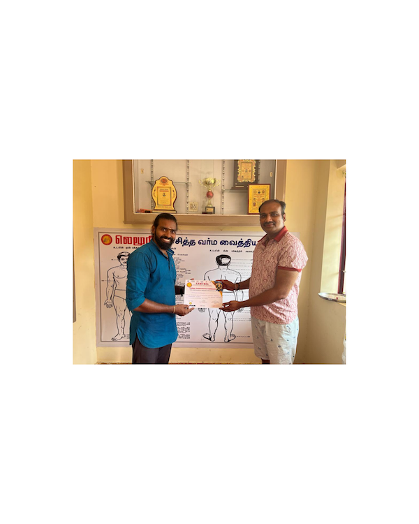

<!DOCTYPE html>
<html>
<head><meta name="generator" content="Hexo 3.8.0">
  <meta charset="utf-8">
  
  <title>About | Maitree Healer</title>
  <meta name="viewport" content="width=device-width, initial-scale=1, maximum-scale=1">
  <meta name="description" content="Alternative Medicine and Natural Healing Journey by a Software Engineer(If you are interested feel free to subscribe to my channel for personal reference and tips)   Namaste, This is Vinoth, I am a s">
<meta property="og:type" content="website">
<meta property="og:title" content="About">
<meta property="og:url" content="http://maitreehealer.com/about/index.html">
<meta property="og:site_name" content="Maitree Healer">
<meta property="og:description" content="Alternative Medicine and Natural Healing Journey by a Software Engineer(If you are interested feel free to subscribe to my channel for personal reference and tips)   Namaste, This is Vinoth, I am a s">
<meta property="og:locale" content="en">
<meta property="og:image" content="http://maitreehealer.com/images/vinoth-profile.jpeg">
<meta property="og:image" content="http://maitreehealer.com/images/acupressure.png">
<meta property="og:image" content="http://maitreehealer.com/images/ladmarma.png">
<meta property="og:image" content="http://maitreehealer.com/images/ph.png">
<meta property="og:image" content="http://maitreehealer.com/images/marma.png">
<meta property="og:image" content="http://maitreehealer.com/images/dowsing-cert.jpeg">
<meta property="og:updated_time" content="2024-04-19T00:37:50.618Z">
<meta name="twitter:card" content="summary">
<meta name="twitter:title" content="About">
<meta name="twitter:description" content="Alternative Medicine and Natural Healing Journey by a Software Engineer(If you are interested feel free to subscribe to my channel for personal reference and tips)   Namaste, This is Vinoth, I am a s">
<meta name="twitter:image" content="http://maitreehealer.com/images/vinoth-profile.jpeg">
  
  
    <link rel="icon" href="/favicon.png">
  
  
    <link href="//fonts.googleapis.com/css?family=Source+Code+Pro" rel="stylesheet" type="text/css">
  
  <link rel="stylesheet" href="/css/style.css">
  
<!-- Google Analytics -->
<script type="text/javascript">
(function(i,s,o,g,r,a,m){i['GoogleAnalyticsObject']=r;i[r]=i[r]||function(){
(i[r].q=i[r].q||[]).push(arguments)},i[r].l=1*new Date();a=s.createElement(o),
m=s.getElementsByTagName(o)[0];a.async=1;a.src=g;m.parentNode.insertBefore(a,m)
})(window,document,'script','//www.google-analytics.com/analytics.js','ga');

ga('create', 'G-718X5S728T', 'auto');
ga('send', 'pageview');

</script>
<!-- End Google Analytics -->


</head>
</html>
<body>
  <div id="container">
    <div id="wrap">
	
      <header id="header">
  <div id="banner"></div>
  <div id="header-outer" class="outer">
    <div id="header-title" class="inner">
      <h1 id="logo-wrap">
        <a href="/" id="logo">Maitree Healer</a>
      </h1>
      
    </div>
    <div id="header-inner" class="inner">
      <nav id="main-nav">
        <a id="main-nav-toggle" class="nav-icon"></a>
        
          <a class="main-nav-link" href="/">Home</a>
        
          <a class="main-nav-link" href="/about/">About</a>
        
          <a class="main-nav-link" href="/autism">Autism</a>
        
          <a class="main-nav-link" href="/services">Services</a>
        
          <a class="main-nav-link" href="/books">Books</a>
        
          <a class="main-nav-link" href="/testimonial">Testimonial</a>
        
          <a class="main-nav-link" href="/gallery">Gallery</a>
        
          <a class="main-nav-link" href="/gift">Gift</a>
        
          <a class="main-nav-link" href="/earthing">Earthing</a>
        
          <a class="main-nav-link" href="/contact">Contact</a>
        
      </nav>
      <nav id="sub-nav">
        
         <!-- commented for google search <a id="nav-search-btn" class="nav-icon" title="Search"></a> -->
      </nav>
      <!--<div id="search-form-wrap">
        <form action="//google.com/search" method="get" accept-charset="UTF-8" class="search-form"><input type="search" name="q" class="search-form-input" placeholder="Search"><button type="submit" class="search-form-submit">&#xF002;</button><input type="hidden" name="sitesearch" value="http://maitreehealer.com"></form>
      </div> -->
    </div>
  </div>
</header>
      <div class="outer">
        <section id="main"><article id="page-" class="article article-type-page" itemscope itemprop="blogPost">
  <!--<div class="article-meta">
    <a href="/about/index.html" class="article-date">
  <time datetime="2024-04-19T00:37:50.618Z" itemprop="datePublished">2024-04-18</time>
</a>
    
  </div> -->
  <div class="article-inner">
    
    
      <header class="article-header">
        
  
    <h1 class="article-title" itemprop="name">
      About
    </h1>
  

      </header>
    
    <div class="article-entry" itemprop="articleBody">
      
        <p></p>
<h2 id="Alternative-Medicine-and-Natural-Healing-Journey-by-a-Software-Engineer"><a href="#Alternative-Medicine-and-Natural-Healing-Journey-by-a-Software-Engineer" class="headerlink" title="Alternative Medicine and Natural Healing Journey by a Software Engineer"></a>Alternative Medicine and Natural Healing Journey by a Software Engineer</h2><p>(If you are interested feel free to subscribe to my channel for personal reference and tips)</p>
<iframe width="560" height="315" src="https://www.youtube.com/embed/wPR55j-vV8s" title="Introduction" frameborder="0" allow="accelerometer; autoplay; clipboard-write; encrypted-media; gyroscope; picture-in-picture" allowfullscreen></iframe>

<p>Namaste, This is Vinoth, I am a software engineer with a loving family.Life was going normal for me but I was always in a search for my destiny. There came a time in my life for a need of alternative medicine. As a head of household it was really difficult and I really wanted to do something to help. That’s when my research got deeper and I started exploring options for alternative treatments. First I studied an online Acupressure Mastery course and saw its power by working on me, my family and friends. Nature has healing powers that we can tap into by using the right points. My research continued on to Ayurveda over the years following Dr. Vasant Lad. Step by step I started adding Ayurvedic daily routines and kept moving towards learning practicing natural remedies.</p>
<p>During a consultation with <strong>Dr. Vasant Lad</strong> he told me that I am a Natural healer based on my astrological chart. Initially I did not believe it but couldn’t deny it later. As time went on I have expanded my knowledge on Mantras, Mudhras (Hand Posture), Breathing exercise, Yoga Postures, Meditation and Chakra Healing as part of my routine. I see positive results in my family and friends.</p>
<p>Every one has to go through ups and downs in the life. There was a time I was down, through the Healing Angels and Guru blessing I got lot better through the magic of Pranic Healing (distance healing from India). As a software engineer it took over 10 years for my engineering mind to accept it and learn it. Only when we experience we will know the power of healing in any form (running, dancing, Yoga, etc…)</p>
<p>Along with Ayurvedic knowledge of that each person is unique, I am blessed to understand each individual and help them heal with the combination of Reading Body Signs, Marma, Mantra, Pranic and daily routines.</p>
<p>Now I understood my destiny, Actual happiness is when you are able to empower people to grow and make them happier and healthier naturally.</p>
<p>Nature always works a great cause, helping the mankind. if our thought aligns with Nature. Universe will bring in all the support we need.  </p>
<p>Learning continues…</p>
<h2 id="Training-Course-Completed"><a href="#Training-Course-Completed" class="headerlink" title="Training/Course Completed:"></a>Training/Course Completed:</h2><p><strong>Acupressure Mastery</strong> – Online course under Michael Reed Gach, Ph.D. - USA.<br><br><strong>Marma Therapy</strong> – Intensive hands-on training under Dr. Vasant Lad - Ayurvedic Institute,USA.<br><br><strong>Medical Varmalogy</strong> – Intensive hands-on training under Dr. Shunmugom - Thirumoolar Varmalogy Institute,India.<br><strong>Reading Body Signs</strong> – Face, Palm, Eye, Tongue - Dr. Vasant Lad - Ayurvedic Institute,USA.<br><strong>Pranic Healing</strong><br>  – Basic - Cancer Foundation Center, El Paso, TX<br>                      Instructor - Lynn - Student of Master Stephen Co - <a href="http://www.pranichealing.com" target="_blank" rel="noopener">www.pranichealing.com</a><br>  – Advanced - World Pranic Healing Foundation, India<br>                      Instructor - Rangesh<br><br><strong>Basic Adimurai</strong> Mother of Martial Arts - Lemuria, Nagercoil, TamilNadu, India<br><strong>Varma Therapy</strong> Hands on Marma/Varma training - Lemuria, Nagercoil, TamilNadu, India<br><br><strong>Dowsing Energy Healing</strong> Udemy, Prof. Krishna N. Sharma Ph.D.<br></p>
<h2 id="Workshop-Completed"><a href="#Workshop-Completed" class="headerlink" title="Workshop Completed:"></a>Workshop Completed:</h2><p><strong>Natural Healing for parents of special needs childrens</strong>, North Domingo Baca Multigeneration Center,Albuquerque.<br><strong>Marma workshop and healing</strong>, South Valley Academy,Albuquerque.<a href="https://www.facebook.com/events/357722831499554/" target="_blank" rel="noopener">Facebook event link</a></p>

      
    </div>
    <footer class="article-footer">
      <a data-url="http://maitreehealer.com/about/index.html" data-id="cm0h5ao5x000089b1xp52p9yv" class="article-share-link">Share</a>
      
      
    </footer>
  </div>
  
    
  
</article>


</section>
        
          <aside id="sidebar">
  
    

  
    

  
    
  
</aside>
        
      </div>
      <footer id="footer">
  
  <div class="outer">
    <div id="footer-info" class="inner">
	 <p>Disclosure Statement: The material presented on this website is intended for informational and educational purposes only, and in no way is meant to substitute for individualized health care or treatment, or mental or behavioral health care therapy provided in person by a qualified professional. Marma Therapy is an ancient form of energy healing and is not intended as a substitute for medical or mental or behavioral health care.  No claim to diagnose, treat or cure any disease, ailment or otherwise provide mental, physical, or behavioral health care is guaranteed, promised or implied by Vinothkumar Dharmalingam by this website.  The information and testimonials contained in this website do not constitute a guarantee, commitment, promise or warranty of any result, outcome, or healing of any individual receiving healing.  By reading and/or browsing through this website, you have agreed to this disclaimer.</p>      &copy; 2019 - 2024 Vinothkumar Dharmalingam<br>
      Powered by <a href="http://hexo.io/" target="_blank">Hexo</a>
    </div>
  </div>
</footer>

    </div>
    <nav id="mobile-nav">
  
    <a href="/" class="mobile-nav-link">Home</a>
  
    <a href="/about/" class="mobile-nav-link">About</a>
  
    <a href="/autism" class="mobile-nav-link">Autism</a>
  
    <a href="/services" class="mobile-nav-link">Services</a>
  
    <a href="/books" class="mobile-nav-link">Books</a>
  
    <a href="/testimonial" class="mobile-nav-link">Testimonial</a>
  
    <a href="/gallery" class="mobile-nav-link">Gallery</a>
  
    <a href="/gift" class="mobile-nav-link">Gift</a>
  
    <a href="/earthing" class="mobile-nav-link">Earthing</a>
  
    <a href="/contact" class="mobile-nav-link">Contact</a>
  
</nav>
			

<script src="//ajax.googleapis.com/ajax/libs/jquery/2.0.3/jquery.min.js"></script>


  <link rel="stylesheet" href="/fancybox/jquery.fancybox.css">
  <script src="/fancybox/jquery.fancybox.pack.js"></script>


<script src="/js/script.js"></script>

			
    
  </div>
  
			  
</body>
</html>